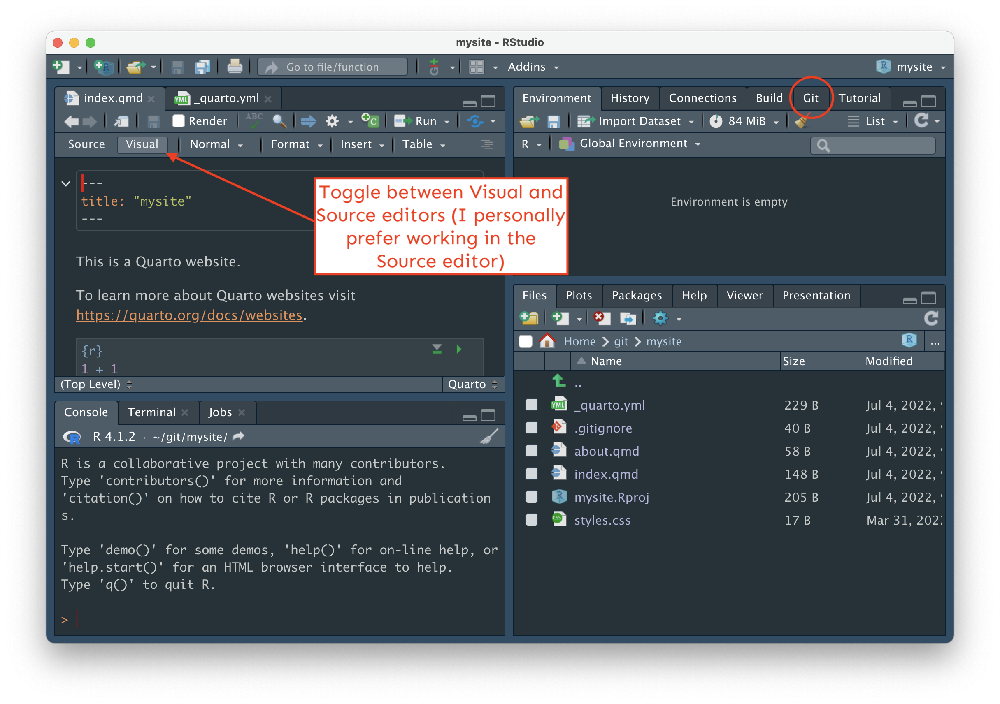
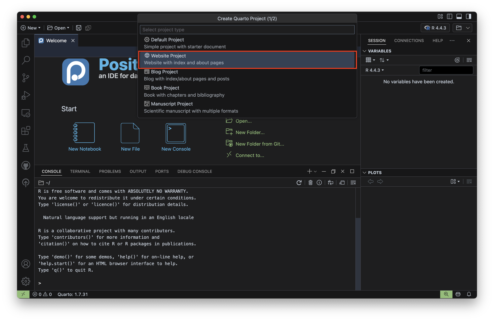
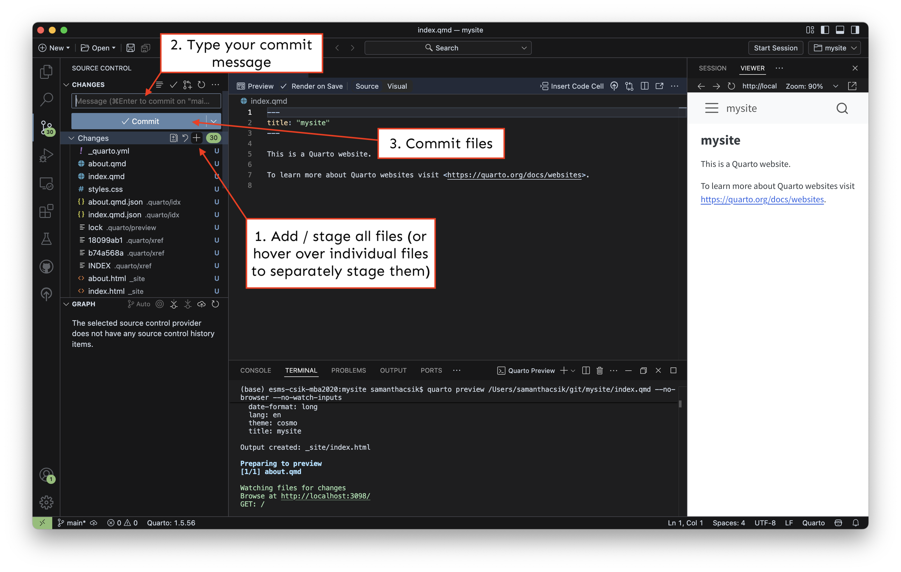
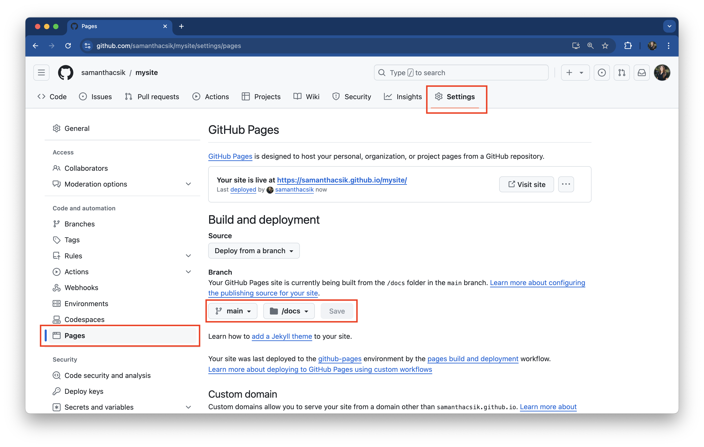
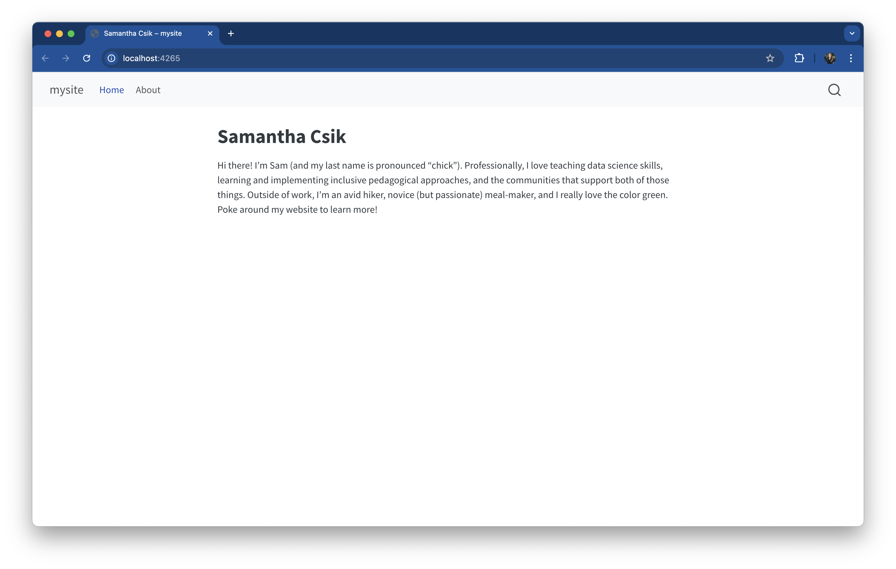
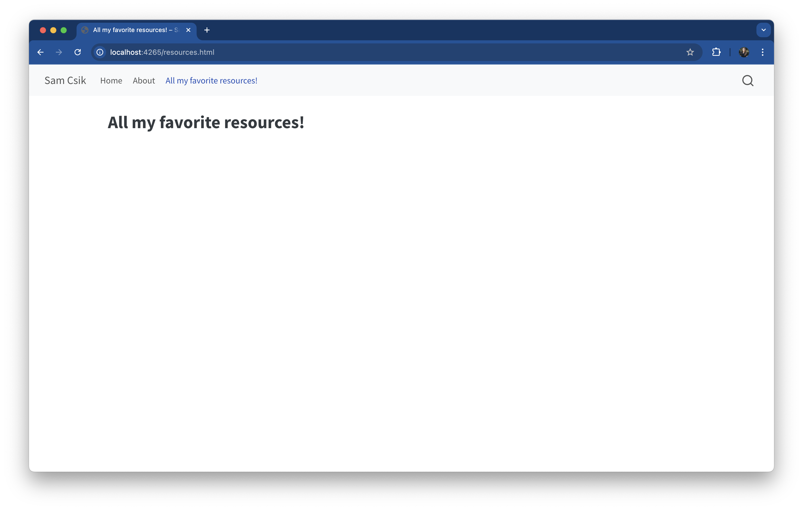
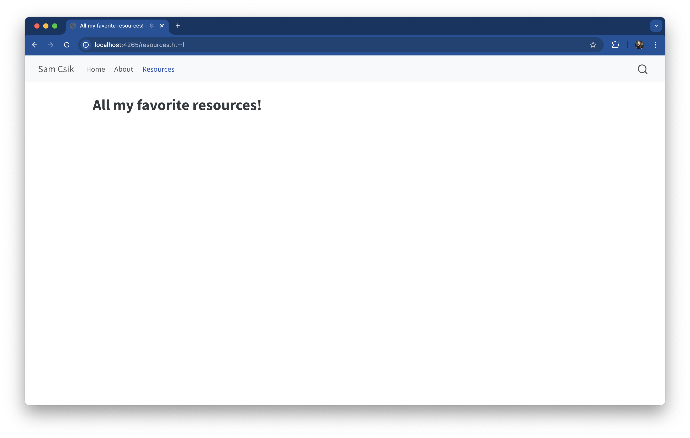

![]()
Illustration by Allison Horst

Quarto is a publishing system built on Pandoc that allows users to create dynamic content using R, Python, Julia, and ObservableJS (with plans to add more languages too!).
R users have long loved RMarkdown for combining prose, code, and outputs into single “knitted” documents. Quarto extends all of RMarkdown’s best features (plus many more!) to additional languages.
.rmd vs. .qmd files
If you’re already an avid RMarkdown user, great news! RMarkdown (.rmd) and Quarto Markdown (.qmd) files look super similar:
--- gates at the top of the document)There are some slight differences to be aware of:
output in .rmd vs. format in .qmd){r echo=FALSE}) in .rmd files, and written below code block braces following hash pipes, |# (e.g. |# echo: false) in .qmd files.rmd files (e.g. FALSE) and lowercase in .qmd files (e.g. false).rmd files and Render .qmd files to convert your work to your desired output type (e.g. .html)
They also look pretty similar when knitted/rendered. Below is a side-by-side comparison of a knitted .rmd file and a rendered .qmd file (both as .html files):


Art by Allison Horst. Be sure to check out the rest of Allison’s seriously cute Quarto penguin art in the rstudio::conf(2022) keynote talk, Hello Quarto, by Julie Lowndes & Mine Çetinkaya-Rundel!
You can explore Quarto’s documentation to learn more about creating documents, websites, blogs, books, slides, dashboards, etc.
Nope! There are a number of R-based tools that make building websites and blogs fun and easy, including the still-widely-used {blogdown} and {distill} packages.

Alternatively, you can skip R altogether and build really beautiful sites using HTML templates (check out this tutorial by past NCEAS Science Communication and Policy Officer / current Bren Teaching Faculty, Alex Phillips) or a variety of static site generators (e.g. Hugo, Jekyll).
That said, Quarto has the data science community abuzz – it’s versatile, user-friendly, and looks pretty great out-of-the-box (while still being customizable), and there’s an ever-growing number of excellent resources (see Mickaël Canouil’s awesome-quarto as a starting point) to help you on your own Quarto journey.
To follow along, you’ll need:
Please refer to the MEDS Installation Guide for detailed setup instructions (follow steps 1-7).
This document reviews three ways to get started with using Quarto to build your website.
The order of operations is slightly different depending on which approach you decide to take, but the concepts remain the same.
 button in the top right corner. Select New Project…
button in the top right corner. Select New Project…
Choose New Directory, then Quarto Website.

Throughout this document, we’ll use the words directory and folder interchangeably.
And finally, fill out the Directory name: field – this is the name of your R project, and will eventually become your remote (i.e. GitHub) repository name (Important: see note below re: naming!), and choose where to save your directory to using the Browse button. Click Create Project.
YourGitHubUsername.github.io if you plan to deploy using GitHub pages
Because we’ll be using GitHub pages to publish / host our websites, it’s recommended that you name your project YourGitHubUsername.github.io (you’re allowed one user website with the github.io suffix) – for example, the project / GitHub repository, which contains the code for my personal website, is named samanthacsik.github.io. Otherwise, name it something reasonable (this will become the slug for your site if publishing with GitHub pages, so choose carefully). I’m calling my project mysite just for tutorial purposes only – you should definitely give yours a more practical / creative name.
There are lots of differing opinions on how to keep your projects / git repositories organized on your computer. I personally save all of mine to a folder called git (repos is another great name) in my computer’s home directory (e.g. on my Mac, Users/samanthacsik/git/) so everything is in one place.

mysite (or whatever you named your Quarto project) with a series of files (_quarto.yml, about.qmd, index.qmd, styles.css) that provide the scaffolding for your website in the Files tab (in the bottom right panel in RStudio, if you haven’t altered the pane layout).When you create a new Quarto website, a handful of files are generated by default:
index.qmd renders your website’s landing page. Whatever you add to this file will be the first content visitors see when they visit your site. Update the content of index.qmd (or any other website page) using markdown and / or HTML (you can mix and match both on the same page), add and execute code chunks and embed outputs, etc. Importantly, do not change the name of index.qmd – this is the default / expected name given to website landing / home pages. If you change the name of this file, you risk breaking your (eventual) deployment.
about.qmd is a regular ’ole website page. You’re able to change both the name of this file (e.g. change about.qmd to my-new-name.qmd) and / or the title of the file by updating its YAML – by default, the YAML only includes a title:
about.qmd
---
title: "About"
---.qmd file and is denoted by a pair of “gates”, ---._quarto.yml is your website configuration file. Any document rendered within your project directory will automatically inherit the metadata defined in this project-level configuration file (though you can control metadata on a page-by-page basis by making edits to an individual page’s YAML, which will override any options specified in _quarto.yml). Importantly, this is where you define your website’s structure (e.g. your navbar, sidebar, footer, etc.). By default, your file should look similar to this:_quarto.yml
project:
type: website
website:
title: "mysite"
navbar:
left:
- href: index.qmd
text: Home
- about.qmd
format:
html:
theme: cosmo
css: styles.css
toc: truestyles.css is a stylesheet, where you can write CSS rules to alter the appearance of your website. We’ll actually create and use a different type of stylesheet (called a “sassy css file”, .scss) in the next workshop, Customizing Quarto Websites.These following will appear after we preview our website and initialize our project as a git repository
The _site/ directory is where all of your rendered HTML (and other important) files live. When you render or preview your site (we’ll do this in the next step!), Quarto takes all of your .qmd files and converts them to .html files, and saves them to this folder (which is important because web browsers don’t know how to read .qmd files, but do know how to read .html files). We’re actually going to change the name of this folder once we configure our website for deployment, but _site is the default name that Quarto uses (we can leave as-is, for now). You don’t want to physically edit or move any files inside this directory (if you want to make a change to your website, update the .qmd or _quarto.yml file, then re-render).
.gitignore is a place where we can specify any files that we don’t want Git to track (i.e. that we want Git to ignore). This is not a “Quarto thing,” but rather a valuable file that lives inside git directories. One common use is to add any large data files that you don’t want to accidentally push to GitHub (GitHub isn’t designed to handle LARGE files).
Terminal
quarto previewquarto preview makes it easy to quickly view iterative changes
Running quarto preview launches a preview of your website in a browser window. So long as you leave the preview running, it will update each time you make and save changes to website files (which makes iterating on your work really easy!).
{usethis} package, if necessary. At this point you’ve created a directory (folder) with the website scaffolding files, but it’s not yet being tracked by git, nor is it connected to a remote repository on GitHub. We can use the {usethis} package to help us set this up. First, install the {usethis} package (if you don’t already have it). Do so by running the following in your console:Console
install.packages("usethis"){usethis} is a package that facilitates interactive workflows for R project creation and development
We’re using the {usethis} workflow here because (1) it’s super easy, and (2) because it’s worth knowing that the {usethis} package exists if you haven’t explored it already! Read more about the tooling this package offers on the usethis documentation.
usethis::use_git(): In the Console, run usethis::use_git() to create a local git repository. Choose yes when asked if it’s okay to commit any uncommitted files. If asked to restart R, choose yes. Once complete, you should see the Git tab appear in your top left pane in RStudio.
When we initialize our R project, mysite/ (or YourGitHubUsername.github.io/), as a git repository using usethis::use_git(), a hidden .git/ folder is created within that project folder. This hidden .git/ folder is the git repository. As you use git commands (or RStudio’s GUI buttons) to capture versions or “snapshots” of your work, those versions (and their associated metadata) get stored within the .git/ folder. This allows you to access and / or recover any previous versions of your work. If you delete .git/, you delete your project’s history. Here is an example website repository, represented visually:
Check the name of your default branch (the only branch you should have at the moment) – that is, the branch that all changes eventually get merged back into (if you’re building a website, this branch is typically the one you’ll want to deploy). There are multiple ways to check this – here are two easy options:
Open RStudio’s Terminal window (next to the Console) and run either git branch (this prints all local branches and highlights the one that you’re currently on) or git status (the first printed line should say On branch <branch_name>).
Click on the Git tab in the top right pane of RStudio. Next to the  symbol, you should see a dropdown menu that displays the name of your current branch.
symbol, you should see a dropdown menu that displays the name of your current branch.
If your current branch is named master, update the name to main. (If your branch is named main, you’re good to go! You can skip this step.) To update your default branch name, run the following in your Console:
Console
usethis::git_default_branch_rename(from = "master", to = "main")Confirm that your branch name was updated by running git status in your Terminal – the first printed line should now read, On branch main. The above function only updates your default branch name for this respository. You’ll also want to update your git config file so that the default branch name of any future local git repository is automatically named main. To do so, run:
Console
usethis::use_git_config(init.defaultBranch = "main")There is a push across platforms and software to update this historical default branch name from master to main. GitHub has already done so – creating a remote repository first results in a default branch named main. Depending on your version of Git and / or your configuration settings, however, you may need to update the name manually when creating a local git repository first (as we’re doing here).
Console
usethis::use_github()Git is a version control software designed to manage the versioning and tracking of source code files and project history. It operates locally on your computer, allowing you to create repositories and track changes. It works directly with files on your computer, and is primarily used through a command line interface (e.g. Terminal, Git Bash). Some GUIs (Graphical User Interfaces), like RStudio, provide user-friendly buttons to execute git commands as well.
GitHub is a cloud-based hosting service that allows you to manage Git repositories – as Jenny Bryan describes in her book Happy Git and GitHub for the useR, hosting services like GitHub “provide a home for your Git-based projects on the internet.” GitHub provides us with the tools for storing, managing, and collaborating on git repositories. It also offers additional features on top of Git, like issue tracking, project management tools, code review, pull requests, and more.
The illustration below depicts how we use Git and GitHub together to version control our work locally (e.g. on our computer(s)), and send versions to and receive updates from a remote (i.e. GitHub) repository.

Illustration by Allison Horst
usethis::use_github() your browser window should open up to your new GitHub repository and look similar to the browser above.The above instructions follow the “create local R project (and initialize as a git repo) first > create upstream remote repo (on GitHub) second” workflow. However, if you already have a remote GitHub repository that you want to use for your website, clone the GitHub repo, then run the following command in the command line:
Command Line
quarto create-project --type websiteThis adds the the default files (_quarto.yml, .gitignore, index.qmd, about.qmd, styles.css) for getting started on your website.
You may also use this approach if you already have an existing local directory of documents or R project that you’d like to use as the directory for your website. First, navigate to that directory / open that R project, then run the above command in the command line.
Open up your command line interface (often Terminal on Macs or Git Bash on Windows)
Navigate to the location on your computer where you’d like your project to live. Determine where you are in your file system using pwd (print working directory). Use cd (change directory) to navigate your file system to wherever you’d like your project to live.
There are lots of differing opinions on how to keep your projects / git repositories organized on your computer. I personally save all of mine to a folder called git (repos is another great name) in my computer’s home directory (e.g. on my Mac, Users/samanthacsik/git/) so everything is in one place.
mysite with whatever name you want to give your repo):Command Line
quarto create-project mysite --type website Throughout this document, we’ll use the words directory and folder interchangeably.
YourGitHubUsername.github.io if you plan to deploy using GitHub pages
Because we’ll be using GitHub pages to publish / host our websites, it’s recommended that you name your project YourGitHubUsername.github.io (you’re allowed one user website with the github.io suffix) – for example, the project / GitHub repository, which contains the code for my personal website, is named samanthacsik.github.io. Otherwise, name it something reasonable (this will become the slug for your site if publishing with GitHub pages, so choose carefully). I’m calling my project mysite just for tutorial purposes only – you should definitely give yours a more practical / creative name.

pwd to see your current working directory. Use cd to change directories.
quarto create-project your_project_name --type website commands.cd into your new mysite directory, and use the ls command to list out all the contents of that directory, you should see a series of files (_quarto.yml, about.qmd, index.qmd, styles.css) that provide the scaffolding for your website. For example:Command Line
# print current working directory
(base) Samanthas-MacBook-Air:git samanthacsik$ pwd
/Users/samanthacsik/git
# move into `mysite` directory
(base) Samanthas-MacBook-Air:git samanthacsik$ cd mysite/
(base) Samanthas-MacBook-Air:mysite samanthacsik$
# list out all files in the `mysite` directory
(base) Samanthas-MacBook-Air:mysite samanthacsik$ ls
_quarto.yml _site about.qmd index.qmd styles.css
When you create a new Quarto website, a handful of files are generated by default:
index.qmd renders your website’s landing page. Whatever you add to this file will be the first content visitors see when they visit your site. Update the content of index.qmd (or any other website page) using markdown and / or HTML (you can mix and match both on the same page), add and execute code chunks and embed outputs, etc. Importantly, do not change the name of index.qmd – this is the default / expected name given to website landing / home pages. If you change the name of this file, you risk breaking your (eventual) deployment.
about.qmd is a regular ’ole website page. You’re able to change both the name of this file (e.g. change about.qmd to my-new-name.qmd) and / or the title of the file by updating its YAML – by default, the YAML only includes a title:
about.qmd
---
title: "About"
---.qmd file and is denoted by a pair of “gates”, ---._quarto.yml is your website configuration file. Any document rendered within your project directory will automatically inherit the metadata defined in this project-level configuration file (though you can control metadata on a page-by-page basis by making edits to an individual page’s YAML, which will override any options specified in _quarto.yml). Importantly, this is where you define your website’s structure (e.g. your navbar, sidebar, footer, etc.). By default, your file should look similar to this:_quarto.yml
project:
type: website
website:
title: "mysite"
navbar:
left:
- href: index.qmd
text: Home
- about.qmd
format:
html:
theme: cosmo
css: styles.css
toc: truestyles.css is a stylesheet, where you can write CSS rules to alter the appearance of your website. We’ll actually create and use a different type of stylesheet (called a “sassy css file”, .scss) in the next workshop, Customizing Quarto Websites.These following will appear after we preview our website and initialize our project as a git repository
The _site/ directory is where all of your rendered HTML (and other important) files live. When you render or preview your site (we’ll do this in the next step!), Quarto takes all of your .qmd files and converts them to .html files, and saves them to this folder (which is important because web browsers don’t know how to read .qmd files, but do know how to read .html files). We’re actually going to change the name of this folder once we configure our website for deployment, but _site is the default name that Quarto uses (we can leave as-is, for now). You don’t want to physically edit or move any files inside this directory (if you want to make a change to your website, update the .qmd or _quarto.yml file, then re-render).
.gitignore is a place where we can specify any files that we don’t want Git to track (i.e. that we want Git to ignore). This is not a “Quarto thing,” but rather a valuable file that lives inside git directories. One common use is to add any large data files that you don’t want to accidentally push to GitHub (GitHub isn’t designed to handle LARGE files).
mysite/)):Command Line
quarto previewcontrol + C.quarto preview makes it easy to quickly view iterative changes
Running quarto preview launches a preview of your website in a browser window. So long as you leave the preview running, it will update each time you make and save changes to website files (which makes iterating on your work really easy!).
You can also preview your website from different locations using file paths. You’ll need to supply the path to your website directory when previewing from a different location. For example, if my Quarto website directory is at Users/samanthacsik/git/mysite, but I am one directory above in Users/samanthacsik/git, I can run quarto preview mysite. Alternatively I could provide the full path quarto preview User/samanthacsik/git/mysite or relative path quarto preview ~/git/mysite, no matter which directory I’m currently in.
cd into your website folder. Then, initialize this folder as a git repository using the git init command in the terminal window.Command Line
git initWhen we initialize our R project, mysite/ (or YourGitHubUsername.github.io/), as a git repository using git init, a hidden .git/ folder is created within that project folder. This hidden .git/ folder is the git repository. As you use git commands (or RStudio’s GUI buttons) to capture versions or “snapshots” of your work, those versions (and their associated metadata) get stored within the .git/ folder. This allows you to access and / or recover any previous versions of your work. If you delete .git/, you delete your project’s history. Here is an example website repository, represented visually:
git status in the command line to identify the name of your default branch (this should be the only branch you have at the moment). Running git status will return something that looks like this, where the first line tells you which branch you’re currently on:Command Line
(base) Samanthas-MacBook-Air:mysite samanthacsik$ git status
On branch master
No commits yet
Untracked files:
(use "git add <file>..." to include in what will be committed)
.quarto/
_quarto.yml
_site/
about.qmd
index.qmd
styles.css
nothing added to commit but untracked files present (use "git add" to track)git status provides lots of helpful information about the current state of your working directory and staging area
I use this command often when working on the command line to double check that I’m actually where I think I am, and to see tracked files and untracked or changed files. It’s a good habit to run git status after switching branches or before / after adding files to commit.
master, update the name to main. If your default branch (you should only have one branch so far, which is the default branch) is already named main, you can head straight to step 8. Otherwise, choose your workflow below based on your Git version (check your version by running git --version in the command line):You can update the default branch to main by running the following line in the command line:
Command Line
git config --global init.defaultBranch mainThis sets the default branch name to main for any new repositories you create moving forward (it does not rename branches in existing projects).
You can double check that this worked by typing out the git status command again. The first printed line should now read, On branch main.
Rename the default branch as main by running the following line in the command line:
Command Line
git branch -m master mainThe -m attribute is used to rename the branch without affecting the branch’s history.
This sets the default branch name to main ONLY for this repository (so you’ll need to do this with any new local git repositories that you create.
You can double check that this worked by typing out the git status command again. The first printed line should now read, On branch main.
There is a push across platforms and software to update this historical default branch name from master to main. GitHub has already done so – creating a remote repository first results in a default branch named main. Depending on your version of Git and / or your configuration settings, however, you may need to update the name manually when creating a local git repository first (as we’re doing here).
Command Line
# this adds all untracked or changed files at once
git add .
# alternatively, you can add files individually
git add <file_name>git status to check in on your file status
Use the git status command again to see if your files have been successfully added before committing them – any untracked or changed files that were once printed in red should now appear in green.
…and commit them (analogous to pressing the “Commit” button in RStudio and typing your commit message into the dialog box that appears):
Command Line
git commit -m "initial commit"username.github.io).README.md, license, or .gitignore file!
Doing so now can lead to merge conflicts. We can add them after our local and remote repositories have been connected.
Git is a version control software designed to manage the versioning and tracking of source code files and project history. It operates locally on your computer, allowing you to create repositories and track changes. It works directly with files on your computer, and is primarily used through a command line interface (e.g. Terminal, Git Bash). Some GUIs (Graphical User Interfaces), like RStudio, provide user-friendly buttons to execute git commands as well.
GitHub is a cloud-based hosting service that allows you to manage Git repositories – as Jenny Bryan describes in her book Happy Git and GitHub for the useR, hosting services like GitHub “provide a home for your Git-based projects on the internet.” GitHub provides us with the tools for storing, managing, and collaborating on git repositories. It also offers additional features on top of Git, like issue tracking, project management tools, code review, pull requests, and more.
The illustration below depicts how we use Git and GitHub together to version control our work locally (e.g. on our computer(s)), and send versions to and receive updates from a remote (i.e. GitHub) repository.
Illustration by Allison Horst

Command Line
git remote add origin https://github.com/YourGitHubUsername/yourRepoName.git
git branch -M main
git push -u origin mainIt does three things:
main (if you didn’t complete step 7, this will take care of it for you!)main branch to the remote GitHub repositoryYou should see something similar to this print out, if successful!
Command Line
(base) Samanthas-Air:mysite samanthacsik$ git remote add origin https://github.com/samanthacsik/mysite.git
(base) Samanthas-Air:mysite samanthacsik$ git branch -M main
(base) Samanthas-Air:mysite samanthacsik$ git push -u origin main
Enumerating objects: 42, done.
Counting objects: 100% (42/42), done.
Delta compression using up to 8 threads
Compressing objects: 100% (35/35), done.
Writing objects: 100% (42/42), 311.78 KiB | 15.59 MiB/s, done.
Total 42 (delta 2), reused 0 (delta 0), pack-reused 0
remote: Resolving deltas: 100% (2/2), done.
To https://github.com/samanthacsik/mysite.git
* [new branch] main -> main
Branch 'main' set up to track remote branch 'main' from 'origin'.
(base) Samanthas-Air:mysite samanthacsik$ .gitignore, LICENSE, README.md files, which we chose not to initialize our remote repository with. The touch command can be used to create any file type that we want (just make sure you’re in the desired location – typically, you want to create these in your project’s root directory). For example:Command Line
touch .gitignoreThe above instructions follow the “create local R project (and initialize as a git repo) first > create upstream remote repo (on GitHub) second” workflow. However, if you already have a remote GitHub repository that you want to use for your website, clone the GitHub repo, then run the following command in the command line:
Command Line
quarto create-project --type websiteThis adds the the default files (_quarto.yml, .gitignore, index.qmd, about.qmd, styles.css) for getting started on your website.
You may also use this approach if you already have an existing local directory of documents or R project that you’d like to use as the directory for your website. First, navigate to that directory / open that R project, then run the above command in the command line.
The following instructions are born from my desire for an entry point into using Positron. They are almost certain to change as my understanding of this new IDE improves, and as Positron continues to be developed. While I’ve experienced some bugs and sticking points along the way, improvements to Positron are ongoing. Please note that while Positron supports development using both R and Python, I’ve chosen to use an R interpreter throughout to better highlight the similarities between RStudio and Positron workflows. Feedback on these instructions is welcomed!
Developed using Positron v2025.06.0 (download)
Command/Control + Shift + P, to open the Command Palette, then type Quarto: Create Project. Press Enter/Return to reveal available options.The Command Palette is the place you’ll want to turn to for accessing all the functionality Positron has to offer, from changing your IDE color theme, to accessing version control actions (e.g. git), to searching for and running extensions, and more. Open it using the keyboard shortcut Command/Control + Shift + P, then use the fuzzy search to explore all available functionality.
Select Website Project, then choose a directory to save your project to. Click Choose Project Directory to confirm.

Throughout this document, we’ll use the words directory and folder interchangeably.
Finally, fill out the Project Directory Name field – this is the name of your Quarto project, and will eventually become your remote (i.e. GitHub) repository name (Important: see note below re: naming!). Press Enter / Return to confirm.
YourGitHubUsername.github.io if you plan to deploy using GitHub pages
Because we’ll be using GitHub pages to publish / host our websites, it’s recommended that you name your project YourGitHubUsername.github.io (you’re allowed one user website with the github.io suffix) – for example, the project / GitHub repository, which contains the code for my personal website, is named samanthacsik.github.io. Otherwise, name it something reasonable (this will become the slug for your site if publishing with GitHub pages, so choose carefully). I’m calling my project mysite just for tutorial purposes only – you should definitely give yours a more practical / creative name.

There are lots of differing opinions on how to keep your projects / git repositories organized on your computer. I personally save all of mine to a folder called git (repos is another great name) in my computer’s home directory (e.g. on my Mac, Users/samanthacsik/git/) so everything is in one place.
mysite (or whatever you named your Quarto project) in the Explorer menu (left side menu option that looks like two overlapping files) with a series of files (_quarto.yml, about.qmd, index.qmd, styles.css) that provide the scaffolding for your website.When you create a new Quarto website, a handful of files are generated by default:
index.qmd renders your website’s landing page. Whatever you add to this file will be the first content visitors see when they visit your site. Update the content of index.qmd (or any other website page) using markdown and / or HTML (you can mix and match both on the same page), add and execute code chunks and embed outputs, etc. Importantly, do not change the name of index.qmd – this is the default / expected name given to website landing / home pages. If you change the name of this file, you risk breaking your (eventual) deployment.
about.qmd is a regular ’ole website page. You’re able to change both the name of this file (e.g. change about.qmd to my-new-name.qmd) and / or the title of the file by updating its YAML – by default, the YAML only includes a title:
about.qmd
---
title: "About"
---.qmd file and is denoted by a pair of “gates”, ---._quarto.yml is your website configuration file. Any document rendered within your project directory will automatically inherit the metadata defined in this project-level configuration file (though you can control metadata on a page-by-page basis by making edits to an individual page’s YAML, which will override any options specified in _quarto.yml). Importantly, this is where you define your website’s structure (e.g. your navbar, sidebar, footer, etc.). By default, your file should look similar to this:_quarto.yml
project:
type: website
website:
title: "mysite"
navbar:
left:
- href: index.qmd
text: Home
- about.qmd
format:
html:
theme: cosmo
css: styles.css
toc: truestyles.css is a stylesheet, where you can write CSS rules to alter the appearance of your website. We’ll actually create and use a different type of stylesheet (called a “sassy css file”, .scss) in the next workshop, Customizing Quarto Websites.These following will appear after we preview our website and initialize our project as a git repository
The _site/ directory is where all of your rendered HTML (and other important) files live. When you render or preview your site (we’ll do this in the next step!), Quarto takes all of your .qmd files and converts them to .html files, and saves them to this folder (which is important because web browsers don’t know how to read .qmd files, but do know how to read .html files). We’re actually going to change the name of this folder once we configure our website for deployment, but _site is the default name that Quarto uses (we can leave as-is, for now). You don’t want to physically edit or move any files inside this directory (if you want to make a change to your website, update the .qmd or _quarto.yml file, then re-render).
.gitignore is a place where we can specify any files that we don’t want Git to track (i.e. that we want Git to ignore). This is not a “Quarto thing,” but rather a valuable file that lives inside git directories. One common use is to add any large data files that you don’t want to accidentally push to GitHub (GitHub isn’t designed to handle LARGE files).
Terminal
quarto previewControl + C in your Terminal.quarto preview makes it easy to quickly view iterative changes
Running quarto preview launches a preview of your website in a browser window. So long as you leave the preview running, it will update each time you make and save changes to website files (which makes iterating on your work really easy!).
{usethis} package for this step, and if you’ve read the Command line-based instructions, you’ll see that we use git commands. {usethis} is a helpful wrapper package for many common git commands, built for use within R Projects. Recall that in step 1, we created a Quarto Project, not an R Project (which is defined by the presence of an .Rproj file in the project’s root directory). There are (at least) two options for proceeding:mysite/) by typing pwd (print working directory) in the TerminalCommand Line / Terminal
git initPros:
Cons:
{usethis}This option requires that we first convert our Quarto Project to an R Project
{usethis} package (if you don’t already have it) by running the following in your console:Console
install.packages("usethis").Rproj file in your project’s root directory:Console
usethis::create_project(path = ".")Console
usethis::use_git()
Pros:
{usethis}, RStudio / Positron project management).Cons:
.Rproj file to your project’s root directory, which sets your project up to use R-specific tools and workflowsWhen we initialize our R project, mysite/ (or YourGitHubUsername.github.io/), as a git repository, a hidden .git/ folder is created within that project folder. This hidden .git/ folder is the git repository. As you use git commands (or Positron’s GUI buttons) to capture versions or “snapshots” of your work, those versions (and their associated metadata) get stored within the .git/ folder. This allows you to access and / or recover any previous versions of your work. If you delete .git/, you delete your project’s history. Here is an example website repository, represented visually:
Check the name of your default branch (the only branch you should have at the moment) – that is, the branch that all changes eventually get merged back into (if you’re building a website, this branch is typically the one you’ll want to deploy). There are multiple ways to check this – here are two easy options:
Open Positron’s Terminal (next to the Console) and run either git branch (this prints all local branches and highlights the one that you’re currently on) or git status (the first printed line should say On branch <branch name>)
Click on the Source Control menu (left side menu option that looks like a branch). You should see the branch name next to your most recent commit.
If your current branch is named master, update the name to main. (If your branch is named main, you’re good to go! You can skip this step.) Choose the option that follows your approach from step 3:
main by running the following in your Terminal:Terminal
git config --global init.defaultBranch mainIn addition to updating this branch name to main, this command also sets the default branch name to main for any new repositories you create moving forward (it does not rename branches in existing projects).
git status in the Terminal. The first printed line should now read, On branch main (you should also see your updated branch name next to your most recent commit in the Source Control menu).Console
usethis::git_default_branch_rename(from = "master", to = "main")Confirm that your branch name was updated by running git status in your Terminal – the first printed line should now read, On branch main (you should also see your updated branch name next to your most recent commit in the Source Control menu).
The above function only updates your default branch name for this respository. You’ll also want to update your git config file so that the default branch name of any future local git repository is automatically named main. To do so, run:
Console
usethis::use_git_config(init.defaultBranch = "main")There is a push across platforms and software to update this historical default branch name from master to main. GitHub has already done so – creating a remote repository first results in a default branch named main. Depending on your version of Git and / or your configuration settings, however, you may need to update the name manually when creating a local git repository first (as we’re doing here).
Open the Source Control menu (left side menu option that looks like a branch)
Click either the Publish Branch button (under Changes), or the cloud updload button (under Graph) (you may be first prompted to log into GitHub), then select Publish to GitHub public repository from the Command Palette. This will open up your web browser to your new remote repository on GitHub – it should already have the same name as your local git repo
Console
usethis::use_github()[SCREENSHOT HERE]
Git is a version control software designed to manage the versioning and tracking of source code files and project history. It operates locally on your computer, allowing you to create repositories and track changes. It works directly with files on your computer, and is primarily used through a command line interface (e.g. Terminal, Git Bash). Some GUIs (Graphical User Interfaces), like RStudio, provide user-friendly buttons to execute git commands as well.
GitHub is a cloud-based hosting service that allows you to manage Git repositories – as Jenny Bryan describes in her book Happy Git and GitHub for the useR, hosting services like GitHub “provide a home for your Git-based projects on the internet.” GitHub provides us with the tools for storing, managing, and collaborating on git repositories. It also offers additional features on top of Git, like issue tracking, project management tools, code review, pull requests, and more.
The illustration below depicts how we use Git and GitHub together to version control our work locally (e.g. on our computer(s)), and send versions to and receive updates from a remote (i.e. GitHub) repository.
Illustration by Allison Horst
There are a lots of options to publish your website. We’ll use the GitHub Pages option, which allows you to publish a website from any GitHub repository (for free!). To do so, there are a few configuration steps:
Create a file named .nojekyll in your repository’s root directory (e.g. mysite/), which is required to disable some processing of HTML files that GitHub does by default. There are two ways you can do this:
From your Terminal (you can use the RStudio Terminal or a separate command line interface – just make sure you’re in the correct directory) type the bash command, touch .nojekyll.
From RStudio’s File pane by clicking New Blank File > Text File, then typing in .nojekyll.
.nojekyll file)
The touch command can be used to create a new, empty file from the command line. Similarly, RStudio’s Text File button allows you to define and create any file type. Since there’s no default button in RStudio for creating a .nojekyll file, you’ll want to use one of these two approaches.
.nojekyll is a hidden file which won’t visibly appear in your directory. You should see it show up as a file to track with git (either under the Git tab in RStudio, or when you run git status in the command line). You can also view hidden files in Finder (Mac) using the keyboard shortcut Command + Shift + ., or follow these instructions for Windows 10, 8.1, and 7.
output-dir in your _quarto.yml file to docs (it’s easiest to open and edit this from RStudio):_quarto.yml
project:
type: website
output-dir: docs
# ~ additional metadata excluded for brevity ~output-dir (here, that’s the docs/ folder)
The output-dir is the directory (i.e. folder) where your rendered .html (and other important) files will automatically be saved to when you “Build” your website (see the next step!) – that is, when you convert all your .qmd files to the .html files that your web browser can interpret / display.
_site/ if it exists and if you’re publishing with GitHub Pages
If you previewed or built your site before setting output-dir to docs in _quarto.yml, you’ll notice a _site/ directory inside your repository – this is the default output directory name. Because GitHub Pages will expect a docs/ folder to deploy from, you can delete _site/ altogether (and push your deletion, if you’ve already committed / pushed _site/ to GitHub). A couple options for deleting files / directories:
Using RStudio GUI buttons: from the Files pane, check the box next to _site > click the Delete button
Using the command line: from the RStudio Terminal (or other command line interface), type git rm -r _site (the -r flag is used to “recursively remove” the folder and all it’s contents, including any subfolders and files within them)
quarto render in the Terminal). You should see your minimal, albeit functional, soon-to-be website appear in the Viewer tab. You can click on the  button to open your file in your web browser. Note: your website is currently being hosted by your local machine, not at a searchable URL. We’ll get there soon though!
button to open your file in your web browser. Note: your website is currently being hosted by your local machine, not at a searchable URL. We’ll get there soon though!
Clicking Render Website in the Build tab (or running quarto render in the Terminal) is a necessary pre-deployment (and redeployment) step – it converts all .qmd files to .html and ensures that all website components are stitched together correctly. If you do not render your website before pushing your files, your changes will not deploy.
Note: Previewing your website is different than rendering your website. Previewing alone does not formally prepare all of your website files for deployment.
Send all of your website files from your local git repository to your remote GitHub repository:
git add . command used in the Terminal for staging all files)git commit -m "my commit message")git push).Configure GitHub pages to serve content from the “docs” directory by clicking on the Settings tab in the top menu bar, then the Pages tab from the left-hand menu bar. Make sure that Branch is set to main and that the selected folder is set to /docs. Click Save. Once deployed (this may take a few minutes), your website’s URL will appear inside a box at the top of the page (you may have to try refreshing a few times).


See deployment status, time of each deployment, and how long it took to deploy each run. You can also find failed deployments here (yes, it does happen on occasion) and take action on fixing them.
Right now, our website is built using Quarto’s default styling. Let’s learn about where things live and how to start customizing some stuff.
/docsWhen you Render your site (by clicking Build > Render Website), Quarto takes all your .qmd files, converts them to .html files (along with some other important stuff), and saves everything to your /docs folder. Your site now deploys from this folder, so you really don’t want to mess with anything in here directly.
index.qmd)index.qmd
This is the default / expected name given to website landing / home pages. If you change the name of this file, you risk breaking your deployment.
index.html (which is built from index.qmd) is the page people will arrive at when navigating to your website – give this landing / home page a makeover by trying out some of the following:
Update the YAML title in your index.qmd file. Here, I changed mine from "mysite" to my name, "Samantha Csik"
Delete the sample text and begin adding your own content – a great place to start is a short blurb introducing yourself!

Run quarto preview in your Terminal, which will open your preview in a browser window. Make changes, save them, and watch your preview update!
index.qmd) using a pre-build templateWhen the about option is added to a document’s YAML, a special template will be used to layout the content of that page. Choose from one of Quarto’s five built-in templates, each with a slightly different layout style. Some YAML options to play around with:
template: choose from Quarto’s built-in template options
image (note that this is a document-level option i.e. is not a sub-item of about): supply it the file path to your photo
image-width & image-shape: adjust your image’s size and shape (round, rounded, rectangle)
links: add buttons with links to your social media pages
index.qmd
---
title: "Samantha Csik"
1image: media/headshot.jpeg
2toc: false
about:
3 template: jolla
4 image-shape: round
image-width: 17em
5 links:
- text: LinkedIn
href: https://www.linkedin.com/in/samanthacsik/
- text: GitHub
href: https://github.com/samanthacsik
- text: Email
href: mailto:scsik@ucsb.edu
---
# page content excluded for brevity ~headshot.jpeg lives in a folder called media/)
toc: false
jolla) to update the layout of your landing page (or any page!)
round, rounded, rectangle) & size
mailto:: that must precede of your email address, mailto::youremail.com)
Fun Tip: Install the Font Awesome Extension for Quarto to add free Font Awesome icons to your site! Be sure to check out the icon option when adding linked buttons to your About Page.
jolla template, adding an image, and linked buttons. Overall, a big improvement! However, our text is a bit squished in the center of the page – we’ll fix then in the next step.Quarto’s built-in templates are great for a couple reasons, primarily:
As you get more comfortable with the Quarto framework and CSS for styling web pages (we’ll learn more about this in a later workshop!), you may decide to build a completely custom web page layout. The following Quarto websites leverage custom layouts to arrange contents on individual web pages:
I briefly touch on using Bootstrap CSS Grid to build these responsive custom web page layouts in this blog post. Check out the Quarto documentation to learn more.
_quarto.ymlThe _quarto.yml file is a configuration file – any document rendered within the project directory will automatically inherit the metadata defined within this file. Some easy updates that make a big difference:
_quarto.yml
toc: true here (in _quarto.yml) renders a navigation menu on all web pages by default (but you can override options on a page-by-page basis)
page-layout to full so that your page content takes up more of the page width

page-layout set to full, so that content doesn’t appear as squished in the middle of the page.title on index.qmd
Going for a more minimalist look? You can comment out (or remove) the title option from index.qmd.
In the default Quarto website skeleton, there are two items in the navbar that appear as “Home” and “About” (Note: don’t confuse the special-formatted “About Page” we created in index.qmd with the navbar page currently titled “About”). Those navbar tabs link to two .html files (index.html and about.html) and are automatically rendered when when you Build to /docs. Adding a new page to your website requires two steps:
.qmd file (from RStudio’s File pane, click Blank File > Quarto Document and save it to your project’s root directory) and add any necessary YAML options, along with any content that you want to appear on that page. Here, I’m creating a new page titled “All of my favorite resources!” and saved it to my root directory as resources.qmd.resources.qmd
---
title: "All my favorite resources!"
---_quarto.yml by adding your new .qmd to the list of navbar pages. My website’s _quarto.yml file now looks like this:_quarto.yml
project:
type: website
output-dir: docs
website:
title: "Sam Csik"
navbar:
left:
- href: index.qmd
text: Home
- about.qmd
1 - resources.qmd
format:
html:
theme: cosmo
css: styles.csstitle field of that file’s YAML. For example, I have set title: "All my favorite resources!" in the YAML of resources.qmd – this is how it will appear in my website’s navbar. If you’d like to set the navbar name as something other than the page’s title, use the href and text options together (e.g. see how index.qmd is rendered as Home in my website’s navbar).


href and text options together in _quarto.yml)Update the appearance of your site by choosing from one of the 25 predefined Bootswatch themes. By default, Quarto sites are built using the cosmo theme. Supply just one theme name to the theme option in your _quarto.qmd file:
_quarto.yml
# ~ additional metadata excluded for brevity ~
# supplying just one theme ("minty")
format:
html:
theme: minty
css: styles.css
or supply both a dark and a light theme for users to toggle between:
_quarto.yml
# ~ additional metadata excluded for brevity ~
# supplying a light ("minty") and dark ("slate") theme to toggle between
format:
html:
theme:
light: minty
dark: solar
css: styles.css
dark theme, which is set to the prebuilt Bootswatch theme theme, slate, is toggled on.If you’ve made and pushed changes to your website, but you’re not seeing your website actually update, you may have forgotten to Render Website! Try doing so, then commit / push your files again.
You should now have a basic version of your website up and running 🎉 In the next sessions, we’ll learn how to:
a. customize the appearance of our site using Sass & CSS
The Quarto Website documentation is amazing – definitely check it out
Awesome Quarto (GitHub repository of curated Quarto resources), by Mickaël Canouil | GitHub repo
Lots of wonderful content and tips included here were borrowed / adapted from Allison Horst’s workshop, Getting started with distill sites – check it out if you’re looking to go the {distill} route! Many thanks to Jim Gardner, who provided super helpful feedback on the flexibility of Quarto’s command line tools. And of course, much gratitude for all those who’ve shared these materials with colleagues, online, etc. – it’s been amazing to receive so many shout outs as folks share their fresh new Quarto sites .
I’ve learned a lot about Quarto since it was released in 2022, and I continue to discover new things on the regular! If you have suggestions on how to correct, improve, or expand on these instructions, please feel free to file an issue on GitHub. Alternatively, you may fork this repository, make any suggested changes, and submit a pull request – if you’d like to go this route, I ask that you first open an issue to discuss your ideas with me .